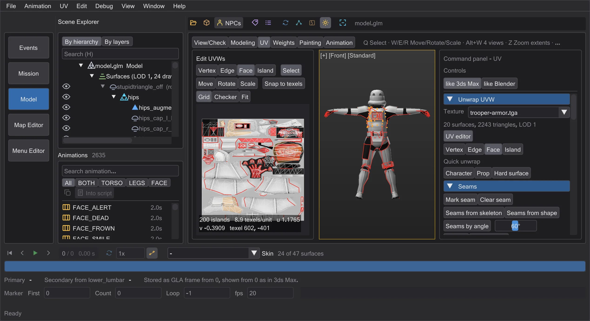
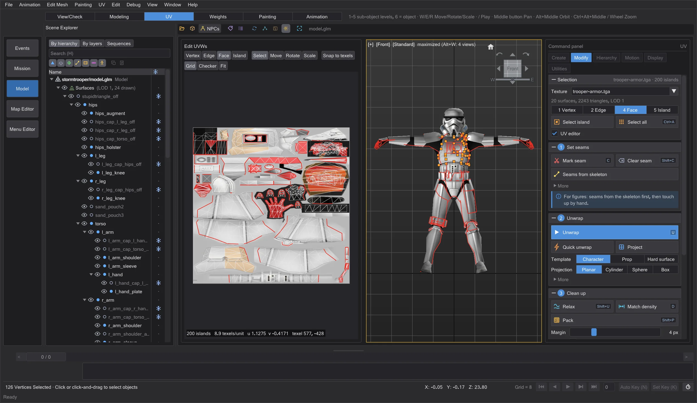
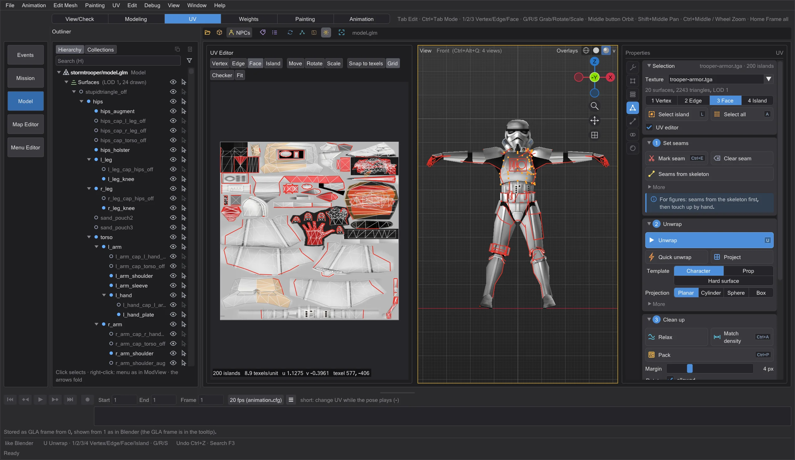
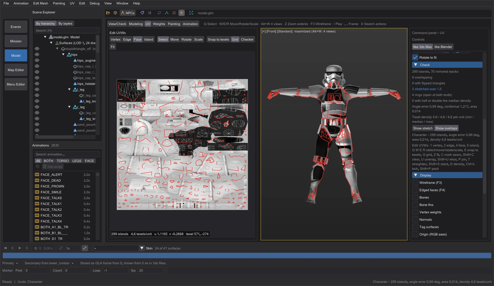

Model tab: create UVs
Lay the surfaces of a .glm or .md3 flat over their texture: cut seams, unwrap, straighten, stack mirrored halves, match the texel density and pack the islands - by hand or in one step - and save the model for the game.
The UV area#
Open a .glm or an .md3 in the model tab and choose the area UV at the top. The Edit UVWs (Blender mode: UV Editor) stands left of the views and shows the islands over the texture of the surface, with the shader and skin of the preview; the edge on its right sets the width, the mouse wheel zooms, the middle button pans. Texture in the rollout chooses which texture you work on: all surfaces that draw it are edited and packed together, at the LOD shown in the view; tag surfaces (*) have no UVs. The commands are in the rollouts of the command panel, in the menu UV, in the right-click of the view (UV) and of the UV editor, and in the search (X, F3 in Blender mode); every tooltip names its key. Every command is one undo step.

The panel on the right: selection and three steps#
The panel on the right follows the order of the work (3ds Max mode: command panel, tab Modify; Blender mode: properties editor, tab Data). Selection names in its heading the texture and the number of islands; it holds the choice of the texture (Texture), the selection level with the key of the control mode, Select island (extends the selection to its whole islands) and Select all. The steps are numbered. 1 Set seams: Mark seam, Clear seam and, for figures, Seams from skeleton. 2 Unwrap: the highlighted main button Unwrap; next to it Quick unwrap runs the template chosen under Template and Project the projection chosen under Projection. 3 Clean up: Relax, Match density and Pack, with the margin as a slider and Rotate. Every button shows its symbol and the key of the control mode. What is needed less often is folded away in each step under More: seams from the shape and by angle, cut ring, mirror seams; re-solve, pins, method and axis; straighten, rectangle, stack, orient, lock and what is packed.


Check says in its heading at a glance whether something needs attention: green when all is good, otherwise the number of findings. Under the switches Checker, Show stretch, Show overlaps and Thick seams (seams with a thick line in the UV editor) the values stand as a table: Stretch (low, or the number of islands stretched over 1.5), Overlaps, Texture use (the share of the texture's texels the islands cover) and Texel density (even, with the largest deviation from the median). More lists islands, mirrored stacks, open rings and the measurements: angle error, conformality, area deviation, density.
Selection in both places#
Vertex, Edge, Face and Island set what a click picks - in the UV editor and on the model at the same time, so a seam can be picked on the model and the island it makes moved in the editor. 3ds Max mode: 1, 2, 4, 5 (vertex, edge, polygon, element), Ctrl adds, Alt removes; Blender mode: 1, 2, 3, 4, Shift toggles. Drag a frame to pick many. Move, Rotate and Scale (W E R; in Blender G R S, which follow the mouse until a click) work on the selection; Snap to texels moves in whole texels of the texture.
Seams, unwrap, arrange#
A model from the game already has a layout: its seams are read as marks and shown in red. Mark seam (C) cuts the selected edges or the border of the selected faces, Clear seam (Shift+C) removes seams and sews the smaller island to the larger. Seams from skeleton, Seams from shape and Seams by angle find seams for you. Unwrap (U) lays the selected faces flat as new pieces in free space at the density of the texture; Re-solve solves islands again where they lie. The method is Conformal (LSCM) or Minimum stretch. Planar, Box, Cylinder and Sphere project the selection. Then Relax, Straighten, Pin, Stack mirrored (left and right halves share one patch), Match density, Orient, Lock and Pack (Shift+P: no island on another, the locked ones stay). JKA has one UV per vertex: where a seam splits UVs, the vertex is doubled with the same position, normal, bones and weights; a command that would give a surface 1000 vertices or more (SHADER_MAX_VERTEXES) changes nothing and says so.
In Blender mode the UV editor also takes Blender's keys: Ctrl+E marks seams, P pins, Shift+W opens Align with Straighten and Orient, U opens the Unwrap menu. Commands without a key in Blender are in the menu and the search.
Quick unwrap, check and save#
Quick unwrap does the whole sequence in one step: Character (seams from the skeleton, limbs opened, mirrored halves stacked), Prop (seams from the shape) and Hard surface (seams at sharp edges, rectangles). With nothing selected it works on the whole texture. The rollout Check counts overlapping, flipped and stretched islands, rings and density outliers and measures the layout: angle error, conformality, area error and texel density per unit. Show stretch, Show overlaps and Checker show the same in the editor. The texture was painted for the layout the model came with - move an island and the picture moves with it, Undo puts it back. Save with Ctrl+S: a .glm through the GLM writer, an .md3 with all its frames and tags; without a change both are byte for byte the file you opened.

Origin and licence#
The UV tools are derived from WhiteoutLib and WhiteoutFlakes (BSD 3-Clause licence with the AI-derived works notice, Copyright (c) 2026 Fernando Sahmkow); charts by shape use xatlas (MIT, Copyright (c) 2018-2020 Jonathan Young). They work only on Jedi Academy data: .glm and .md3 surfaces, .skin and .shader. The licence texts ship in licenses/ and are listed in THIRD-PARTY.md and in Help > About.